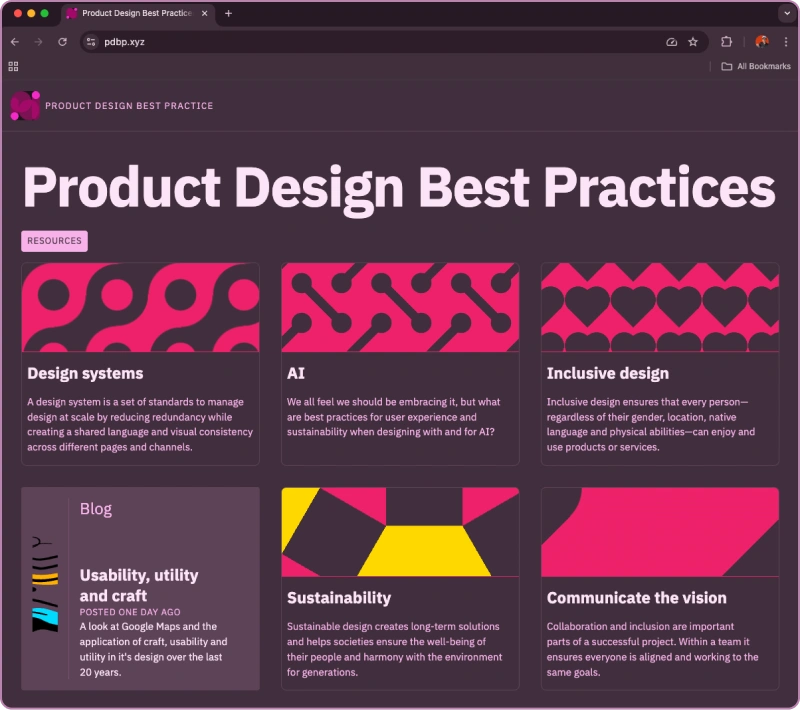
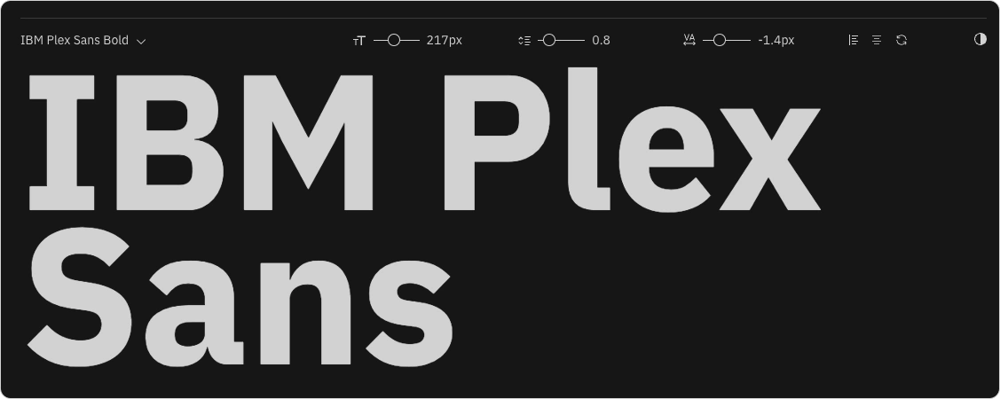
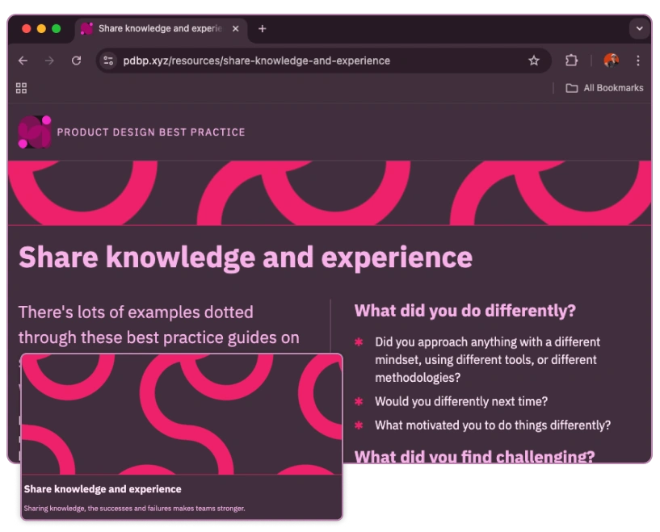
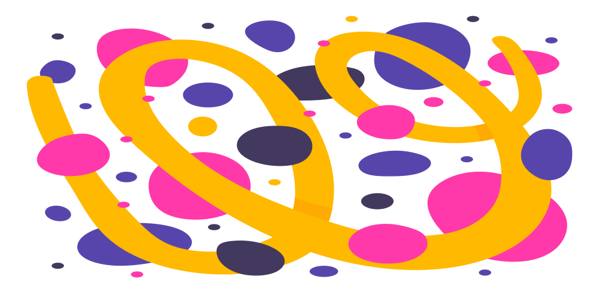
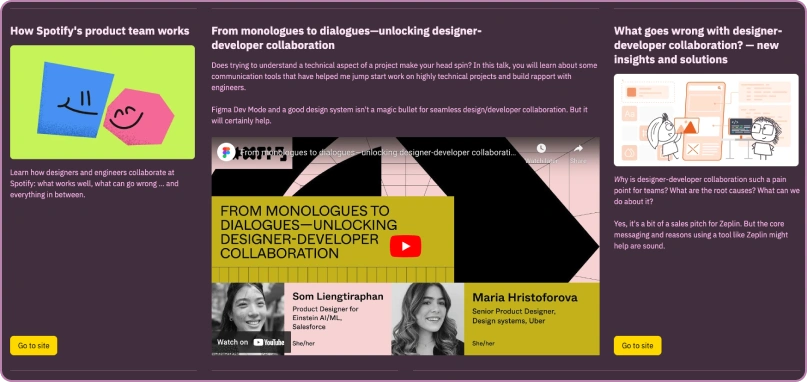
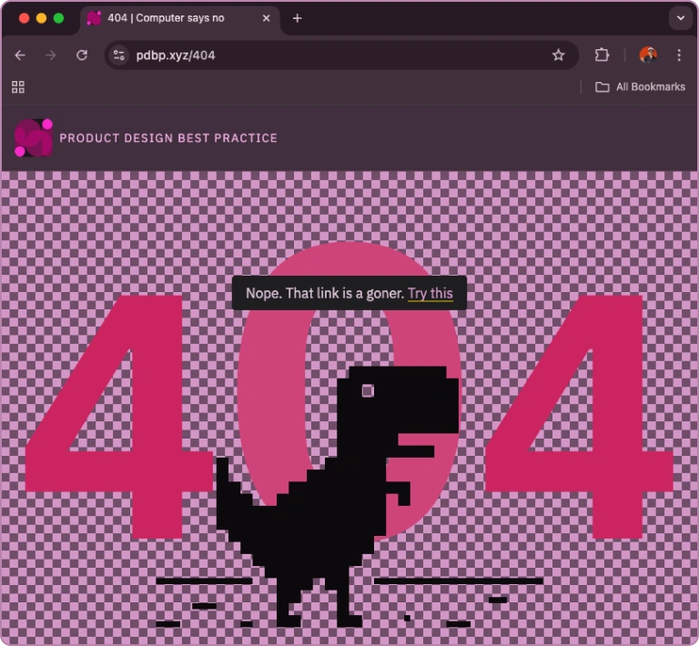

Blog
The making of
Through the second half of 2024 I was compiling a set of product design resources and reference materials for my colleagues at Sparck.
We didn’t really have an internal platform that let me present the material in the way I wanted. I’d built something usable in Miro, but it never quite felt right. Ironically, trying to document best practice using tools that didn’t embody much of it was… frustrating.
It quickly became obvious that a website would be a better home.
A site would be easier to navigate, easier to maintain, and far more flexible in how content could be structured and discovered. And selfishly, it gave me an excuse to do something I don’t get many chances to do these days: proper front-end development.
Because the site is entirely mine, there are no constraints. No approvals. No need to justify decisions. Sometimes it’s nice to pursue a creative idea simply because you want to.
With that context out of the way, here’s a quick look at how the site came together.
Naming and conventions
The domain name is pdbp.xyz.
Product Design Best Practices felt far too cumbersome, so I started hunting for abbreviations. The .xyz TLD felt memorably ridiculous, which made it perfect.
For the CMS, I went with Expression Engine. Mostly because I know it extremely well from my freelancing days. It’s far more of a blank canvas than platforms like WordPress, Squarespace, or Webflow. There’s more overhead up front, but I like the control that comes with building things from first principles.
All of the design happened directly in the browser. Components and layouts evolved organically, which means the markup and CSS could definitely do with a refactor. But as I’m the only person touching the code, that’s a job I’m happily postponing.
Colour and typography
One of the first decisions was the colour palette.
I knew I wanted a dark theme for energy efficiency. The background colour I landed on, which I’ve unimaginatively named dusk, is one Google uses in one of their dark-mode Chrome themes. If you happen to be using that theme, the browser and site blend together nicely, a small Easter egg I quite like.

Using HSL colour values, I built out a restrained monochrome palette. The bright pink accent colour isn’t something I’d normally choose, and I honestly can’t remember how it arrived. At some point it appeared on the page, felt right, and stuck. It’s since become one of the site’s defining colours.
Typography-wise, I’m using IBM Plex Sans. It’s readable, compact, and has a slightly technical tone that suits the subject matter. Type sizes follow my usual minion, brevier, primer naming conventions, and the responsive scale was lifted wholesale from a previous project.

Seeing that scale applied across a full site has already surfaced things I’d tweak. On desktop, body copy could probably be a point or two larger, and the smallest size a little tighter. That kind of insight only really comes once typography is used extensively, in context.
Patterns, graphics, and performance
Most resource categories don’t have obvious image choices, but I still wanted visual interest. Abstract graphics felt like the right answer.
I decided to use CSS background patterns. Initially this was for performance, avoiding extra HTTP requests, but it quickly became a design advantage too. All patterns are driven by CSS variables, making it trivial to reuse and recolour them consistently across the site.
I hadn’t used CSS patterns like this before, but they’ve turned out to be remarkably effective. They scale beautifully, require no responsive image work, and once the system is in place, adding new patterns is essentially copy and paste.

For the blog, I wanted something visually distinct, so I avoided patterns. SVG illustrations felt like a good fit: scalable, lightweight, and easy to deploy without worrying about multiple image sizes. Realistically, I don’t have time to create bespoke illustrations for each post, so I’ve leaned on Unsplash’s illustration library. A one-month subscription gave me enough SVGs to cover a year’s worth of posts.

Most blog lead images are abstract, partly because I’m downloading them well before writing the posts. I’m fine with that, for now at least. More contextual imagery can always live within the post itself.
For bitmap images, I’m mostly converting everything to WebP. Picflow has been by far the easiest free tool I’ve found for this.

Layout challenges and trade-offs
The most challenging layouts are on the resource pages. Entries are laid out using CSS Grid with auto-fit, which makes responsive behaviour straightforward. Single-column layouts on mobile work perfectly.
On larger screens, things get more interesting.
Video entries sit alongside text-based resources, and to make videos genuinely usable, they span two columns. That extra width improves utility, but it also creates awkward pockets of empty space around shorter items.
On one hand, that’s mildly annoying. On the other, I quite like the irregularity it introduces. The grid feels more dynamic and less uniform, which adds a bit of visual rhythm.
When CSS masonry layouts gain better browser support, this is likely one of the first areas I’ll revisit.
Reflections
I expected this to be a much shorter post.
Writing it all down has been a useful reminder of just how many decisions go into designing and building a site, many of them made instinctively at the time and only rationalised afterwards.
I’d normally invite feedback or questions here, but I haven’t built a contact system yet. My LinkedIn profile is linked though, so feel free to drop me a message there.
And finally, a quick mention of the 404 page. Hopefully you haven’t seen it.
But if you have, I think it’s rather fun.

-

You’re a creative
Whether you’re an artist, a carpenter, a teacher or a dentist, creativity shows up in most jobs, even if it isn’t always obvious.
-

Where Does Creativity Fit?
You can follow a collection of frameworks, workshops and methodologies to ensure your designs are really well validated and meet all the project requirements. Does it matter if creativity is largely neglected in the process?
-

Making uncomfortable comfortable
Great design often emerges gradually. It’s shaped through iteration, learning and a willingness to sit with a bit of uncertainty along the way.
-

Why not?
A sort of book review. Why aren’t the best creativity books written for product designers?
-

Alchemy
Ostensibly written about the value of divergent thinking in marketing - but I really can't recommend this book enough for product designers.
-

Usability, utility and craft
A look at Google Maps and the application of craft, usability and utility in it's design over the last 20 years.
-

The case for working slow
Whatever field you work in there’s likely a push towards efficiency and increasing productivity. Here's an alternative take on how the avoidance of certain efficiencies is in itself an efficiency.
-

Did somebody say dark patterns?
Dark, or deceptive, UX patterns are designs that force the user to take an action that is not in their best interest. They can also be highly effective at boosting conversions.
-

ChatGPT and me
A few observations on using AI to build coded prototypes as part of the design process.
-

Sustainabe Design for digital transformation
Digital transformation isn’t just about technology. It drives cultural and mindset shifts that shape our thoughts, actions, and behaviours.
-

Climate Action & the Expanding Role of Designers
Design won’t solve climate change on its own. But neither will digital transformation be sustainable without designers willing to challenge assumptions
-

Digital Sustainability, Biodiversity & Designing Within Ecosystems
I’m increasingly seeing Human-Centred Design as needing to expand into something broader — designing with people, planet, and systems in mind.
-

Designing sustainable systems
Digital transformation can accelerate climate action, biodiversity protection, and pollution reduction — but only if it’s intentionally designed.
-

A reflection on designing for sustainability
A short reflection on my key takeaways after completing the UN's Digital4Sustainability course.